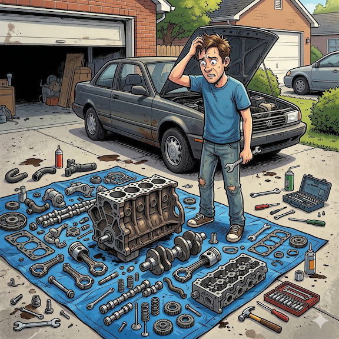

Section I: Introduction · Lesson 02-IN
Blockchain at a Glance
The Big Picture

- Our Goal Today: Before we dive into the deep technical concepts of this course, we need to establish a high-level frame of reference.
- The Analogy: Think of this lesson like looking at a fully assembled car.
- Before we take the engine apart to learn how the pistons work, it helps to see the whole vehicle drive down the road.
- Setting Expectations: We aren’t going to build the engine today. We just want to identify the major components, learn what they are called, and see how they fit together.
What is a Blockchain?
- A Shared Reality: At its core, a blockchain is a system that allows multiple distributed participants to agree on a single, shared history of events without needing a central referee.
- An Append-Only Ledger: It is a database that can only be added to. You cannot edit or delete past entries.
- A State Machine: It moves from one agreed-upon “state” (e.g., Alice has 5 tokens) to the next (e.g., Alice has 2, Bob has 3) based on strict, universally enforced rules.
Permissionless vs. Permissioned Ledgers Public blockchains (like Bitcoin) assume participants are anonymous and untrusted. However, private/permissioned blockchains are used by known entities (like a consortium of banks) who share a ledger and want mathematical guarantees of accuracy.
The “Block” in Blockchain
- The Analogy: Think of a single block as a page in a ledger book or a shipping container.
- The Purpose: Instead of processing transactions one by one, the network bundles them together into a single, organized package.
- The Heartbeat: New blocks are sealed and added to the network at regular intervals.
- The Contents: At a high level, a block contains a batch of approved script operations (commonly referred to as “transactions”) and a mathematical link to the past.
The Three Pillars
A blockchain is not one single invention. It is the clever synthesis of three distinct technologies.
- Cryptography: Secures the data and proves identity. (Encryption, Hashes, and Digital Signatures).
- Peer-to-Peer (P2P) Networks: Distributes the data so everyone has a copy and there is no central server to attack.
- Consensus Mechanisms: The rules by which the network agrees on what data is valid and what should be rejected.
Pillar 1: Cryptography
- Encryption (Symmetric & Asymmetric): The math used to scramble data for confidentiality. While blockchains generally do not encrypt the ledger itself, these concepts are the fundamental building blocks for digital signatures and advanced privacy features.
- Digital Signatures (Public/Private Keys): A way to mathematically prove that you authorized an action without revealing your secret password.
- Cryptographic Hashes: Think of this as a digital fingerprint. Any piece of data can be crushed down into a unique string of letters and numbers. If the data changes even slightly, the fingerprint changes completely.
- The Role: Cryptography doesn’t hide the data (most blockchains are entirely public). Instead, it makes the data tamper-evident and unforgeable.
Pillar 2: Peer-to-Peer Networks
- No Central Server: There is no “blockchain.com” server running the network.
- Nodes: Thousands of individual computers (nodes) run the blockchain software.
- Gossip Protocol: When one node hears about a new transaction, it shouts it to its neighbors, who shout it to their neighbors, until the whole world knows.
Pillar 3: Consensus
- The Problem of Errors and Conflicts: In a P2P network, some participants will broadcast invalid or conflicting information (e.g., spending money they don’t have).
- The Mechanism: Consensus is the algorithmic process the nodes use to agree on what is valid and reject incorrect state changes.
- Examples: Proof of Work (Miners) or Proof of Stake (Validators).
- The Result: The network achieves the same synchronized state, defeating the problem of untrusted participants.
Putting it Together: The Lifecycle of a Transaction
- To see how these three pillars interact, we will trace a single transaction from start to finish.
- The Scenario: Alice wants to send Bob a digital asset over a blockchain network.
Sign
Broadcast
Mempool
Chain
Step 1: Creation and Signing
- Intent: Alice opens her wallet software and creates a message: “Send 5 coins from Alice to Bob.”
- Signing (Cryptography): Alice uses her Private Key to mathematically sign this message.
- Security: This signature proves Alice authorized it, and ensures no one can change the “5” to a “50” while the message is in transit.
Step 2: The Broadcast
- Transmission: Alice’s wallet sends this signed message to a single node on the network.
- The Gossip (P2P Network): That node checks the math. If it’s valid, it passes it to its peers. Within moments, the transaction has spread across the network into other nodes’ “waiting rooms.”
Step 3: The Mempool
- Pending State: Transactions don’t happen instantly. They sit in a holding area called the Memory Pool (Mempool).
- Unconfirmed: At this stage, the network knows about Alice’s intent, but it is not yet officially part of the blockchain’s history. It is “unconfirmed.”
Step 4: Block Assembly
- The Miner/Validator: Special nodes on the network pull pending transactions out of the mempool.
- Packing the Box: They verify that Alice actually has the 5 coins to spend, and then pack her transaction into a “Block” alongside hundreds of others.
- The Competition: Multiple nodes are trying to pack blocks at the same time. Who gets to add theirs to the official chain?
Step 5: Achieving Consensus
- The Rules: The network uses its Consensus Mechanism (e.g., Proof of Work) to select one node’s block to be the official next block.
- Winning the Right: A node proves it followed the rules (expended energy, staked assets) and broadcasts its newly minted block to the network.
Step 6: Chaining the Block
The Hash Link: This is where the “chain” in blockchain comes in. The new block contains the “fingerprint” (cryptographic hash) of the previous block.
Immutability: Because Block 102 contains the fingerprint of Block 101, you cannot change a transaction in Block 101 without breaking Block 102, Block 103, and so on.
Alice’s Transaction is Finalized: Alice’s transaction is now a part of that shared chain, recorded for all to see.
The Result: A Shared Truth
- Every honest node on the network updates their local copy of the ledger.
- Alice’s balance decreases by 5; Bob’s balance increases by 5.
- No central bank processed it. No administrator approved it.
- Cryptography, P2P networking, and consensus rules orchestrated a secure state change in a mutually suspicious environment.
| Alice | -5 |
| Bob | +5 |
| Alice | -5 |
| Bob | +5 |
| Alice | -5 |
| Bob | +5 |
The Spectrum of Decentralization
- Not all blockchains are designed like Bitcoin. They exist on a spectrum based on who can participate.
- Permissionless (Public):
- Anyone can read, write, or participate in consensus.
- High censorship resistance, lower performance.
- Examples: Bitcoin, Ethereum.
- Permissioned (Private/Consortium):
- Only authorized entities can read, write, or validate.
- Higher performance, better privacy, but requires trusting the gatekeepers.
- Examples: Hyperledger Fabric, Corda.
Common Misconceptions: What a Blockchain is NOT
- It is NOT a cloud storage drive:
- You do not store PDFs or large files on a blockchain. Space is incredibly expensive. It stores state and receipts, not massive data.
- It is NOT inherently anonymous:
- Most public blockchains are pseudonymous. Your name isn’t on it, but your entire financial history is permanently public. If your address is ever linked to your identity, you have zero privacy.
- It is NOT an impenetrable fortress:
- While the cryptography is extremely strong, the endpoints (wallets, exchanges, smart contracts) are highly vulnerable to hacking and human error.
Looking Ahead: Next Steps
- You have now seen the assembled vehicle and watched it drive from Point A to Point B.
- Historical Context: Before we dismantle the engine, the rest of this Introduction module will explore the history of how and why this technology was built.
- The Primitives: After the introduction, we will take the car into the garage to dismantle the engine. We will dive deep into:
- Cryptographic Primitives: The math that makes hashes and signatures unforgeable.
- Distributed Systems in Practice: How P2P networks actually route data.
- Consensus Deep-Dive: How algorithms like Proof of Work and Proof of Stake enforce the rules against adversaries.